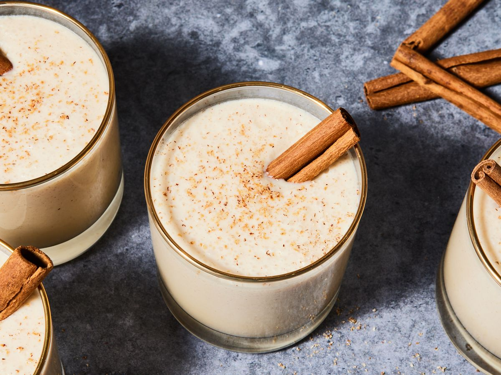

Puerto Rican Coquito

Description
If you like coconut and eggnog, you’ll love Puerto Rican Coquito! Coquito
is a thick and creamy coconut drink that mixes silky GOYA® Coconut Milk
with sweet GOYA® Cream of Coconut, cinnamon and rum. This rich, authentic
coquito recipe is commonly made during Christmas where it is served cold
and meant to be shared with family and friends.
Ingredients
- 2 Cans of GOYA Evaporated Milk
- 1 Can of GOYA Cream of Coconut
- 1 Can of GOYA Coconut Milk
- 1/2 Cup of GOYA Sweetened Condensed Milk
- 1/2 Cup White Rum (Optional)
- 1 Tsp. of Vanilla Extract
-
1/2 Tsp. of Ground Cinnamon, plus more for garnish, if desired. Also
Cinnamon Sticks (Optional)
Steps to follow
-
In bowl of blender, add evaporated milk, cream of coconut, coconut milk,
sweetened condensed milk, rum (if using), vanilla extract and ground
cinnamon. Blend on high until mixture is well combined, 1-2 minutes.
-
Pour coconut mixture into glass bottles; cover. Transfer to
refrigerator. Chill until cold.
-
To serve, stir or shake bottle well to combine. Pour coquito into small
serving glasses. Garnish with ground cinnamon and cinnamon sticks, if
desired.